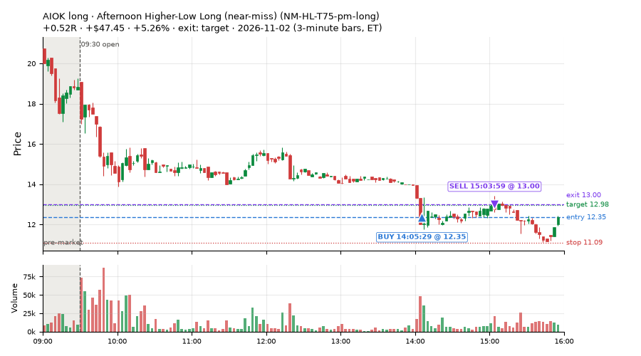
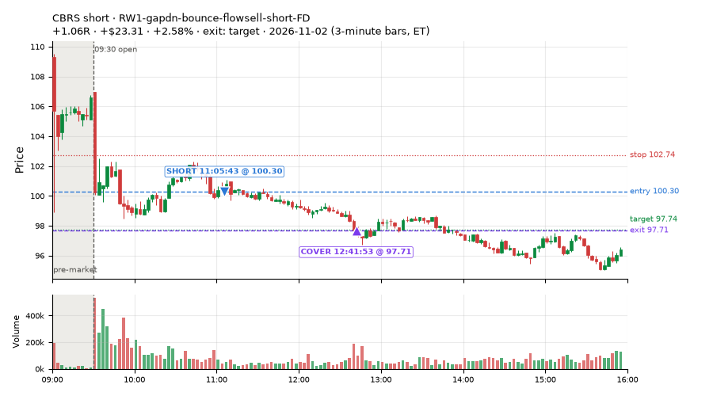
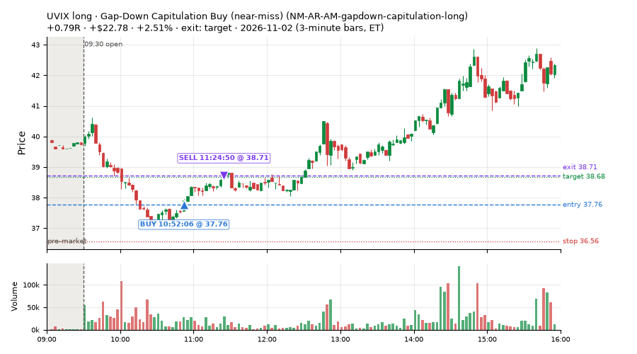
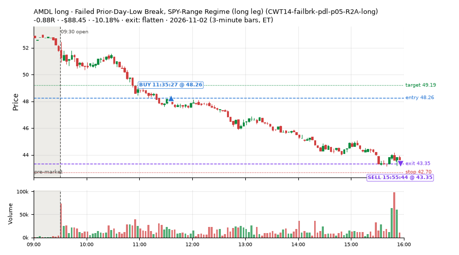
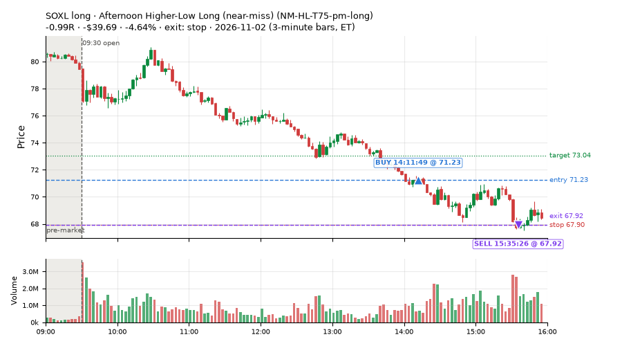
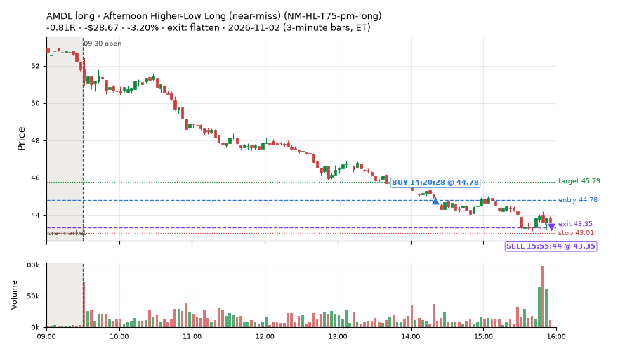
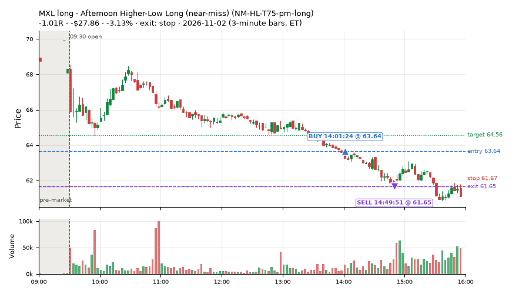
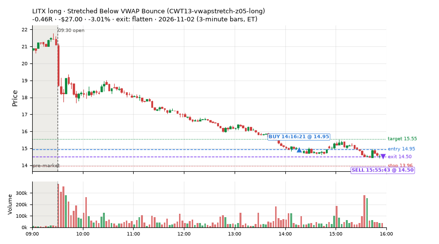

129 trades · win rate 47% · P/L $-382.24
PROBATION: no live setup has passed both locked test periods. 10 owner-directed setups added 2026-10-08 (MarcoFlow top 5 + 5 new), untested live. RW6G1 (RW6 + VWAP band guard) added 2026-10-09, probation.

| Symbol | Setup | Side | In | Out | Entry | Exit | Exit reason | % gained | P/L |
|---|---|---|---|---|---|---|---|---|---|
| AIOK | Afternoon Higher-Low Long (near-miss) (NM-HL-T75-pm-long) | long | 14:05 | 15:03 | 12.35 | 13.00 | target | +5.26% | $47.45 |
| CBRS | RW1-gapdn-bounce-flowsell-short-FD | short | 11:05 | 12:41 | 100.30 | 97.71 | target | +2.58% | $23.31 |
| UVIX | Gap-Down Capitulation Buy (near-miss) (NM-AR-AM-gapdown-capitulation-long) | long | 10:52 | 11:24 | 37.76 | 38.71 | target | +2.51% | $22.78 |
| Symbol | Setup | Side | In | Out | Entry | Exit | Exit reason | % lost | P/L |
|---|---|---|---|---|---|---|---|---|---|
| AMDL | CWT14-failbrk-pdl-p05-R2A-long | long | 11:35 | 15:55 | 48.26 | 43.35 | flatten | -10.18% | $-88.45 |
| SOXL | NM-HL-T75-pm-long | long | 14:11 | 15:35 | 71.23 | 67.92 | stop | -4.64% | $-39.69 |
| AMDL | NM-HL-T75-pm-long | long | 14:20 | 15:55 | 44.78 | 43.35 | flatten | -3.20% | $-28.67 |
| MXL | NM-HL-T75-pm-long | long | 14:01 | 14:49 | 63.64 | 61.65 | stop | -3.13% | $-27.86 |
| LITX | CWT13-vwapstretch-z05-long | long | 14:16 | 15:55 | 14.95 | 14.50 | flatten | -3.01% | $-27.00 |








Signal to fill: median 2s, 90th percentile 3s (129 trades). Bars close each minute; the order follows the bar close.
Best excursion (MFE): median 0.34R; worst (MAE) median 0.61R. 43% of trades never got +0.25R in our favour; 1 reached +1R and still closed at or below 0.
| Symbol | Setup | Best R | Worst R | Closed R |
|---|---|---|---|---|
| SOXS | exhaustion_short-FD | +1.22 | -1.04 | -0.99 |
| CRWD | NS5-sma50-flush-oversold-long-FD | +0.80 | -1.01 | -1.03 |
| DELL | CWT14-failbrk-pdl-p10-long | +0.63 | -1.01 | -1.01 |
| DELL | CWT14-failbrk-pdl-p10-lowvol-long | +0.63 | -1.01 | -1.01 |
| OIH | CWT13-vwapstretch-z05-long | +0.54 | -1.08 | -1.06 |
| Entry time | Trades | Win | Avg R | P/L |
|---|---|---|---|---|
| 09:50-10:30 | 32 | 69% | +0.04 | $91.68 |
| 10:30-11:30 | 24 | 54% | -0.14 | $20.01 |
| 11:30-13:00 | 13 | 31% | -0.58 | $-176.51 |
| 13:00-14:00 | 12 | 25% | -0.57 | $-123.20 |
| 14:00-16:00 | 48 | 38% | -0.32 | $-194.22 |
| Setup | Trades | Win | Avg R | Adj R (net of SPY) | P/L |
|---|---|---|---|---|---|
| Spike-Pullback Flag Breakout (CWT12-flag-s1-long) | 1.0 | 100% | +0.30 | +1.03 | $2.07 |
| Stretched Below VWAP Bounce (CWT13-vwapstretch-z05-long) | 21.0 | 43% | -0.34 | -0.17 | $-79.30 |
| Failed Prior-Day-Low Break, SPY-Range Regime (long leg) (CWT14-failbrk-pdl-p05-R2A-long) | 19.0 | 47% | -0.16 | -0.05 | $-169.77 |
| Failed Prior-Day-Low Break Long (CWT14-failbrk-pdl-p10-long) | 24.0 | 46% | -0.34 | -0.21 | $-66.73 |
| Failed Prior-Day-Low Break Long (0.1 ATR, low volume) [fill] (CWT14-failbrk-pdl-p10-lowvol-long) | 15.0 | 47% | -0.33 | -0.16 | $-38.26 |
| MF5-flowsell-vwapup-rsi5hi-FD | 8.0 | 38% | -0.35 | -0.41 | $-7.67 |
| Gap-Down Capitulation Buy (near-miss) (NM-AR-AM-gapdown-capitulation-long) | 2.0 | 100% | +0.80 | +0.88 | $39.61 |
| Late-Day ETF Dip Buy (near-miss) (NM-ETF-late-dip-di-long) | 1.0 | 100% | +0.53 | +0.60 | $11.44 |
| Afternoon Higher-Low Long (near-miss) (NM-HL-T75-pm-long) | 24.0 | 33% | -0.41 | -0.33 | $-157.31 |
| Early NS3 Short While SPY Up (near-miss) (NM-RWN3-ns3-spyup-early-short) | 1.0 | 100% | +0.87 | +0.74 | $21.87 |
| Monday Weak-RS NS3 Short (near-miss) (NM-RWN5-ns3-mon-weakrs-short) | 2.0 | 100% | +0.83 | +0.68 | $35.16 |
| Early NS3 Short While QQQ Up (near-miss) (NM-RWR3-ns3-qqqup-early-short) | 1.0 | 100% | +0.81 | +0.62 | $13.40 |
| Big Loser VWAP Reclaim Fade, Morning, Wide Stop (NS3V1-am-widestop-short) | 3.0 | 100% | +0.45 | +0.38 | $56.99 |
| NS5-sma50-flush-oversold-long-FD | 3.0 | 0% | -1.05 | -0.89 | $-55.18 |
| RW1-gapdn-bounce-flowsell-short-FD | 2.0 | 100% | +0.87 | +0.67 | $34.86 |
| exhaustion_short-FD | 2.0 | 0% | -1.01 | -1.06 | $-23.42 |
Market direction (SPY, beta 1) accounted for $-161.57 of today's $-382.24; the rest ($-220.67) came from the setups themselves. Avg R net of SPY: -0.15 (incl. a hedge leg's cost; report only).
46 setups live today. Today: 264 signals, 129 taken, 5 lost because another setup held the symbol (2%). Since 2026-10-12 (16 sessions): 8339 signals, 4148 taken, 674 lost to other setups (8%). Peak open positions today 44 of 400 slots. Earnings blackout removed 1857 symbols before scanning.
Simulated playing time (not live): 4176 what-if trades of signals not taken, avg -0.09R, 58% winners; of them 674 lost to another setup (avg -0.20R).
Silent: LD4-st4-breadthup-t1s05-long, LD8-spy-dip030-breadthturn-spxl-holdtr-long, LD1-ns1-breadthup-t05s1-long, NM-RWR1-exh150-gapdn-spyup-pm-short, CWT04-backside-lh-a25-short, CWT04-backside-vwaptest-a25-short · Crowded out: MF5-flowsell-vwapup-rsi5hi, NS3-failed-vwap-reclaim-short-FD · Starved: NS5-sma50-flush-oversold-long-FD, exhaustion_short-FD, MF2-open-rsimidhi-flowsell, RW4-ns3-adv150-short-FD
| Prio | Setup | Today sig / taken | Sessions | Signals / taken / trades | Taken/day | Expected/day | Lost to other setups | Lost to (setup n) | Top skip reasons | SIMULATED: not-taken n / avg R / win | Verdict |
|---|---|---|---|---|---|---|---|---|---|---|---|
| 1 | Big Loser VWAP Reclaim Fade, Morning, Wide Stop NS3V1-am-widestop-short | 19 / 3 | 7 | 43 / 19 / 19 | 2.71 | 5.30 | 2 | NS3V1-am-widestop-short 2 | not shortable / shorts off 14, spread / quote / size 8, symbol held by another setup 2 | 24 / +0.17R / 79% | slow 13.6 entries/week; ~4 weeks to 60 trades |
| 2 | * Oversold EMA Cross-Down with Breadth Turning Up (near-miss) LD4-st4-breadthup-t1s05-long | 0 / 0 | 9 | 0 / 0 / 0 | 0.00 | – | 0 | – | – | 0 / – | silent no signals in 9 session(s); no expected rate on file |
| 3 | * Oversold Slope Turn with Breadth Turning Up (near-miss) LD5-st2-breadthup-t05s1-long | 0 / 0 | 9 | 1 / 0 / 0 | 0.00 | – | 1 | NS3V1-am-widestop-short 1 | symbol held by another setup 1 | 1 / +0.51R / 100% | slow no entries yet |
| 4 | * SPY Dip of 0.30%, Breadth Turn (SPXL, trailing) (near-miss) LD8-spy-dip030-breadthturn-spxl-holdtr-long | 0 / 0 | 9 | 0 / 0 / 0 | 0.00 | – | 0 | – | – | 0 / – | silent no signals in 9 session(s); no expected rate on file |
| 5 | * Oversold Slope Turn after an SPY Dip-Turn (near-miss) LD3-st2-idxturn-t05s1-long | 0 / 0 | 9 | 1 / 0 / 0 | 0.00 | – | 1 | NS3V1-am-widestop-short 1 | symbol held by another setup 1 | 1 / +0.51R / 100% | slow no entries yet |
| 6 | * SPY Dip of 0.2 ATR, Breadth Turn (SPXL, trailing) (near-miss) LD6-spy-dip020atr-breadthturn-spxl-holdtr-long | 0 / 0 | 9 | 2 / 2 / 2 | 0.22 | – | 0 | – | – | 0 / – | slow 1.1 entries/week; ~54 weeks to 60 trades |
| 7 | * Oversold Pop with Breadth Turning Up (near-miss) LD1-ns1-breadthup-t05s1-long | 0 / 0 | 9 | 0 / 0 / 0 | 0.00 | – | 0 | – | – | 0 / – | silent no signals in 9 session(s); no expected rate on file |
| 8 | * Shallow Nasdaq Dip, Breadth Turn (TQQQ) (near-miss) LD2-qqq-dip015-breadthturn-tqqq-t05s1-long | 0 / 0 | 9 | 4 / 4 / 4 | 0.44 | – | 0 | – | – | 0 / – | slow 2.2 entries/week; ~27 weeks to 60 trades |
| 9 | * Oversold Pop after an SPY Dip-Turn (trailing) (near-miss) LD7-ns1-idxturn-holdtr-long | 0 / 0 | 9 | 1 / 1 / 1 | 0.11 | – | 0 | – | – | 0 / – | slow 0.6 entries/week; ~108 weeks to 60 trades |
| 10 | Monday Weak-RS NS3 Short (near-miss) NM-RWN5-ns3-mon-weakrs-short | 13 / 2 | 11 | 19 / 7 / 7 | 0.64 | – | 0 | – | not shortable / shorts off 6, spread / quote / size 5, other 1 | 12 / +0.29R / 67% | slow 3.2 entries/week; ~19 weeks to 60 trades |
| 11 | Early NS3 Short While QQQ Up (near-miss) NM-RWR3-ns3-qqqup-early-short | 8 / 1 | 11 | 11 / 3 / 3 | 0.27 | – | 0 | – | spread / quote / size 5, not shortable / shorts off 3 | 8 / +0.24R / 62% | slow 1.4 entries/week; ~44 weeks to 60 trades |
| 12 | Early NS3 Short While SPY Up (near-miss) NM-RWN3-ns3-spyup-early-short | 13 / 1 | 11 | 18 / 4 / 4 | 0.36 | – | 1 | NS3V1-am-widestop-short 1, NM-RWN5-ns3-mon-weakrs-short 1, NM-RWR3-ns3-qqqup-early-short 1 | not shortable / shorts off 7, spread / quote / size 5, symbol held by another setup 1 | 14 / +0.38R / 71% | slow 1.8 entries/week; ~33 weeks to 60 trades |
| 13 | Late-Day ETF Dip Buy (near-miss) NM-ETF-late-dip-di-long | 2 / 1 | 11 | 10 / 8 / 8 | 0.73 | – | 0 | – | spread / quote / size 1, other 1 | 2 / +0.19R / 50% | slow 3.6 entries/week; ~16 weeks to 60 trades |
| 14 | NS2 Up-3 Short, QQQ Up, Slope Down (near-miss) NM-RWR4-ns2-up3-qqqup-slopedn-short | 0 / 0 | 11 | 6 / 5 / 5 | 0.45 | – | 0 | – | not shortable / shorts off 1 | 1 / -1.04R / 0% | slow 2.3 entries/week; ~26 weeks to 60 trades |
| 15 | Afternoon Exhaustion Short, Gap-Down, SPY Up (near-miss) NM-RWR1-exh150-gapdn-spyup-pm-short | 0 / 0 | 11 | 0 / 0 / 0 | 0.00 | – | 0 | – | – | 0 / – | silent no signals in 11 session(s); no expected rate on file |
| 16 | NS2 Short, SPY Up 0.5%, Not Friday (near-miss) NM-RWN4-ns2-spyup05-notfri-short | 0 / 0 | 11 | 9 / 8 / 8 | 0.73 | – | 0 | – | not shortable / shorts off 1 | 1 / -1.04R / 0% | slow 3.6 entries/week; ~16 weeks to 60 trades |
| 17 | Gap-Down Capitulation Buy (near-miss) NM-AR-AM-gapdown-capitulation-long | 4 / 2 | 11 | 60 / 40 / 40 | 3.64 | – | 0 | – | spread / quote / size 19, other 1 | 20 / -0.23R / 40% | ok 18.2 entries/week |
| 18 | Quiet Downtrend Bounce Short (near-miss) NM-AMS-N1-quiet-morning-short | 0 / 0 | 11 | 2 / 1 / 1 | 0.09 | – | 1 | NM-AR-AM-gapdown-capitulation-long 1 | symbol held by another setup 1 | 1 / +0.51R / 100% | slow 0.5 entries/week; ~132 weeks to 60 trades |
| 19 | Gap-Down Reclaim Fade, Afternoon (near-miss) NM-PM-gapdn-above-pdh-rvol-short | 0 / 0 | 11 | 2 / 2 / 2 | 0.18 | – | 0 | – | – | 0 / – | slow 0.9 entries/week; ~66 weeks to 60 trades |
| 20 | Gap-Down VWAP Loss Short, Slope Filter (near-miss) NM1-cwt09-g10-vwaploss-short | 3 / 0 | 11 | 45 / 4 / 4 | 0.36 | – | 0 | – | not shortable / shorts off 36, spread / quote / size 3, other 2 | 41 / +0.12R / 56% | slow 1.8 entries/week; ~33 weeks to 60 trades |
| 21 | Afternoon Higher-Low Long (near-miss) NM-HL-T75-pm-long | 25 / 24 | 11 | 47 / 43 / 43 | 3.91 | – | 2 | CWT09-gapdn-vwaploss-g10-short 2, CWT09-gapdn-bounce-g10-lowerhalf-short 2 | symbol held by another setup 2, spread / quote / size 2 | 4 / +0.12R / 75% | ok 19.5 entries/week |
| 22 | Backside Lower-High Short (big runner) CWT04-backside-lh-a25-short | 0 / 0 | 16 | 0 / 0 / 0 | 0.00 | – | 0 | – | – | 0 / – | silent no signals in 16 session(s); no expected rate on file |
| 23 | Backside VWAP-Test Short (big runner) CWT04-backside-vwaptest-a25-short | 0 / 0 | 16 | 0 / 0 / 0 | 0.00 | – | 0 | – | – | 0 / – | silent no signals in 16 session(s); no expected rate on file |
| 24 | Gap-Down VWAP Loss Short (10% gap) CWT09-gapdn-vwaploss-g10-short | 3 / 0 | 16 | 135 / 11 / 11 | 0.69 | – | 0 | – | not shortable / shorts off 117, spread / quote / size 5, daily loss cap 1 | 124 / +0.02R / 58% | slow 3.4 entries/week; ~17 weeks to 60 trades |
| 25 | Panic Flush Reversal (deep, 5x volume) CWT05-flush-m075-v5-long | 0 / 0 | 16 | 7 / 4 / 4 | 0.25 | – | 0 | – | daily loss cap 2, spread / quote / size 1 | 3 / +0.42R / 100% | slow 1.2 entries/week; ~48 weeks to 60 trades |
| 26 | NS5-sma50-flush-oversold-long-FD NS5-sma50-flush-oversold-long-FD | 4 / 3 | 9 | 12 / 10 / 10 | 1.11 | 6.32 | 0 | – | spread / quote / size 2 | 2 / +0.06R / 50% | starved 1.11 entries/day vs ~6.32 expected |
| 27 | Gap-Down Bounce Rejection Short (10% gap) CWT09-gapdn-bounce-g10-lowerhalf-short | 2 / 0 | 16 | 139 / 17 / 17 | 1.06 | – | 0 | – | not shortable / shorts off 113, spread / quote / size 6, price through stop/target 1 | 122 / -0.22R / 37% | slow 5.3 entries/week; ~11 weeks to 60 trades |
| 28 | Backside Lower-High Short CWT04-backside-lh-a15-short | 0 / 0 | 16 | 6 / 2 / 2 | 0.12 | – | 0 | – | spread / quote / size 2, daily loss cap 1, not shortable / shorts off 1 | 4 / +0.43R / 75% | slow 0.6 entries/week; ~96 weeks to 60 trades |
| 29 | Panic Flush Reversal (5x volume) CWT05-flush-m05-v5-long | 0 / 0 | 16 | 11 / 6 / 6 | 0.38 | – | 1 | CWT14-failbrk-orl-p10-long 1 | daily loss cap 2, spread / quote / size 2, symbol held by another setup 1 | 5 / +0.51R / 100% | slow 1.9 entries/week; ~32 weeks to 60 trades |
| 30 | Panic Flush Reversal (deep, 3x volume) CWT05-flush-m075-v3-long | 0 / 0 | 16 | 18 / 12 / 12 | 0.75 | – | 0 | – | daily loss cap 3, spread / quote / size 2, broker rejected 1 | 6 / +0.17R / 83% | slow 3.8 entries/week; ~16 weeks to 60 trades |
| 31 | Spike-Pullback Flag Breakout CWT12-flag-s1-long | 2 / 1 | 16 | 20 / 15 / 15 | 0.94 | – | 0 | – | daily loss cap 2, spread / quote / size 1, broker rejected 1 | 5 / -0.06R / 80% | slow 4.7 entries/week; ~13 weeks to 60 trades |
| 32 | Backside VWAP-Test Short CWT04-backside-vwaptest-a15-short | 0 / 0 | 16 | 14 / 7 / 7 | 0.44 | – | 1 | CWT14-failbrk-pdl-p05-lowvol-long 1 | spread / quote / size 3, not shortable / shorts off 2, symbol held by another setup 1 | 7 / +0.25R / 43% | slow 2.2 entries/week; ~27 weeks to 60 trades |
| 33 | Early Sellers into a Pop (index down, no gap up) (near-miss) NM-MF3-qqqdn-gapdn-FD | 4 / 0 | 9 | 43 / 24 / 24 | 2.67 | 4.90 | 4 | NM-AR-AM-gapdown-capitulation-long 4 | not shortable / shorts off 9, spread / quote / size 6, symbol held by another setup 4 | 19 / +0.13R / 58% | slow 13.3 entries/week; ~4 weeks to 60 trades |
| 34 | Stretched Above VWAP Fade (far) CWT13-vwapstretch-z075-short | 0 / 0 | 16 | 30 / 15 / 15 | 0.94 | – | 0 | – | not shortable / shorts off 9, daily loss cap 4, spread / quote / size 1 | 15 / -0.52R / 27% | slow 4.7 entries/week; ~13 weeks to 60 trades |
| 35 | RW1-gapdn-bounce-flowsell-short-FD RW1-gapdn-bounce-flowsell-short-FD | 5 / 2 | 9 | 73 / 43 / 43 | 4.78 | 17.10 | 4 | NM-AR-AM-gapdown-capitulation-long 1, NM-HL-T75-pm-long 1, CWT12-coil-k4-long 1 | daily loss cap 10, spread / quote / size 9, not shortable / shorts off 7 | 30 / +0.54R / 80% | ok 23.9 entries/week |
| 36 | MF5-flowsell-vwapup-rsi5hi-FD MF5-flowsell-vwapup-rsi5hi-FD | 13 / 8 | 9 | 60 / 41 / 41 | 4.56 | 15.47 | 1 | NM-AR-AM-gapdown-capitulation-long 1 | spread / quote / size 9, not shortable / shorts off 6, other 3 | 19 / +0.18R / 58% | ok 22.8 entries/week |
| 37 | Sellers into Strength (all day) MF5-flowsell-vwapup-rsi5hi | 6 / 0 | 9 | 27 / 0 / 0 | 0.00 | 15.47 | 20 | MF5-flowsell-vwapup-rsi5hi-FD 19, NM-AR-AM-gapdown-capitulation-long 1 | symbol held by another setup 20, spread / quote / size 3, not shortable / shorts off 2 | 27 / -0.19R / 44% | crowded-out 20 of 27 signals (74%) lost to setups already holding the symbol |
| 38 | exhaustion_short-FD exhaustion_short-FD | 8 / 2 | 9 | 93 / 61 / 61 | 6.78 | 64.64 | 3 | CWT12-coil-k4-long 3 | not shortable / shorts off 20, spread / quote / size 8, symbol held by another setup 3 | 32 / -0.23R / 41% | starved 6.78 entries/day vs ~64.64 expected |
| 39 | Stretched Below VWAP Bounce (far) CWT13-vwapstretch-z075-long | 2 / 0 | 16 | 49 / 14 / 14 | 0.88 | – | 0 | – | daily loss cap 28, spread / quote / size 4, other 3 | 35 / -0.30R / 43% | slow 4.4 entries/week; ~14 weeks to 60 trades |
| 40 | Failed Prior-Day-Low Break, SPY-Range Regime (long leg) CWT14-failbrk-pdl-p05-R2A-long | 31 / 19 | 1 | 31 / 19 / 19 | 19.00 | – | 0 | – | spread / quote / size 12 | 12 / -0.50R / 33% | ok 95.0 entries/week |
| 41 | Failed Prior-Day-Low Break, SPY-Range Regime (short leg) CWT14-failbrk-pdl-p05-R2A-short | 0 / 0 | 1 | 0 / 0 / 0 | 0.00 | – | 0 | – | – | 0 / – | quiet - wait no signals in 1 session(s); too early to tell |
| 42 | Stretched Below VWAP Bounce CWT13-vwapstretch-z05-long | 34 / 21 | 15 | 341 / 138 / 138 | 9.20 | – | 2 | CWT14-failbrk-pdh-p05-lowvol-short 1, CWT09-gapdn-vwaploss-g10-short 1, CWT09-gapdn-bounce-g10-lowerhalf-short 1 | daily loss cap 152, other 25, spread / quote / size 23 | 202 / -0.16R / 58% | ok 46.0 entries/week |
| 43 | Early Sellers, Mid-High RSI MF2-open-rsimidhi-flowsell | 0 / 0 | 4 | 2 / 1 / 1 | 0.25 | 1.30 | 0 | – | not shortable / shorts off 1 | 1 / -1.06R / 0% | starved 0.25 entries/day vs ~1.30 expected |
| 44 | Afternoon VWAP Reclaim Fade NS4-pm-vwap-reclaim-oversold-short | 3 / 0 | 4 | 13 / 8 / 8 | 2.00 | 3.05 | 0 | – | spread / quote / size 3, other 2 | 5 / +0.43R / 60% | slow 10.0 entries/week; ~6 weeks to 60 trades |
| 45 | Failed Prior-Day-Low Break Long (0.1 ATR, low volume) [fill] CWT14-failbrk-pdl-p10-lowvol-long | 21 / 15 | 11 | 236 / 157 / 157 | 14.27 | – | 7 | CWT14-failbrk-pdl-p10-long 3, CWT14-failbrk-pdl-p05-lowvol-long 2, CWT09-gapdn-bounce-g5-lowerhalf-short 1 | spread / quote / size 53, daily loss cap 12, symbol held by another setup 7 | 76 / -0.14R / 60% | ok 71.4 entries/week |
| 46 | Failed Prior-Day-Low Break Long CWT14-failbrk-pdl-p10-long | 39 / 24 | 16 | 654 / 423 / 423 | 26.44 | – | 22 | CWT14-failbrk-pdl-p10-lowvol-long 15, CWT14-failbrk-pdl-p05-lowvol-long 4, CWT14-failbrk-pdl-p05-long 2 | spread / quote / size 147, daily loss cap 31, symbol held by another setup 22 | 228 / -0.08R / 64% | ok 132.2 entries/week |
Every trade is attached as a CSV you can open and edit in Excel or Google Sheets. Live page: https://misiti15.github.io/MCF/live/